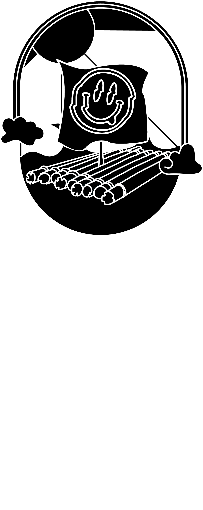
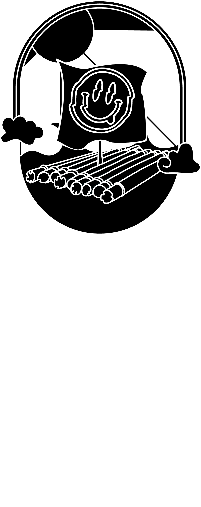
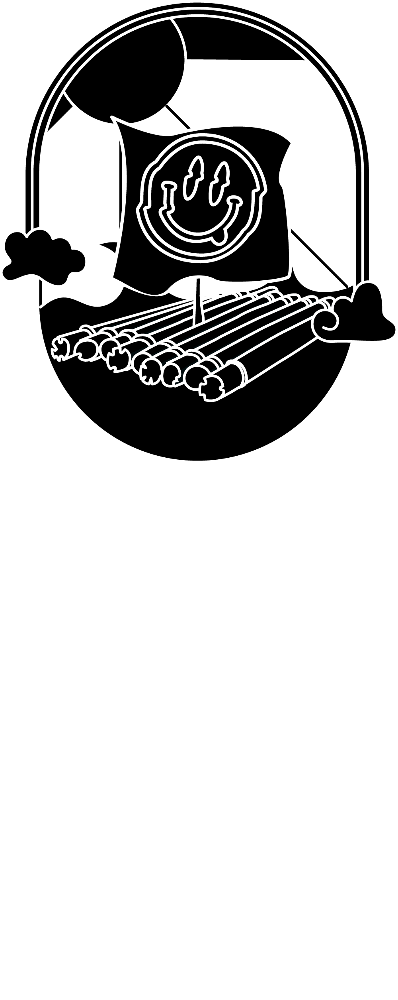
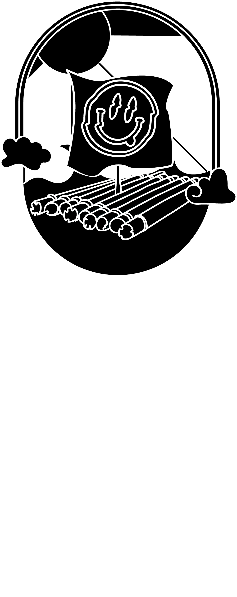

1. Será disponibilizado um espaço para exposição das obras, de forma que os visitantes possam conhecer e apreciar o trabalho dos artistas.
2. Disponibilizaremos uma mesa e cadeira para cada expositor.(A decoração das mesas é livre como o artista desejar).
3. Os expositores deverão estar presentes durante todo o horário de funcionamento do evento, para garantir a segurança das obras e atender aos visitantes.
4. Os expositores deverão assinar um termo de responsabilidade, concordando em cumprir as normas e regras do evento, inclusive a não venda de produtos no dia do evento .
5. A organização do evento não se responsabiliza por danos, roubos ou extravios de obras e produtos dos expositores.
6. Indicamos levar tendas e/ou guarda sol pois o local será num ambiente aberto sem cobertura.
1. Disponibilidade para se apresentar na data do festival (05 de agosto).
2. Repertório original.
3. Ter pelo menos uma música autoral gravada e disponível em plataformas digitais.
4. Enviar material de divulgação (vídeo, áudio, fotos) que demonstre habilidades musicais e presença de palco.
5. Disposição para cumprir normas e regras do festival, incluindo horários de apresentação e logística.
6. Concordância em ceder direitos de imagem e som das apresentações ao festival para fins de divulgação e registro.
7. Comprometimento em não fazer uso de drogas ilícitas ou substâncias que possam comprometer a performance durante o festival.
8. Seleção por Curadoria do coletivo Jangada.
9. Respeitar o tempo de duração do show (vai ser comunicado após a seleção).
10. As bandas terão acesso a um camarim, e deverá ser mantido limpo e organizado